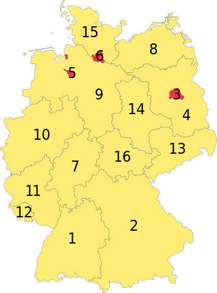

Административное деление
Германия — государство с федеративным устройством; в составе 16 равноправных субъектов — земель
| Земля | Столица | Немецкое название земли | Немецкое название столицы |
|---|---|---|---|
| 1. Баден-Вюртемберг | Штутгарт | Baden-Württemberg | Stuttgart |
| 2. Бавария | Мюнхен | Freistaat Bayern | München |
| 3. Берлин | Берлин | Berlin | Berlin |
| 4. Бранденбург | Потсдам | Brandenburg | Potsdam |
| 5. Свободный ганзейский город Бремен | Бремен | Freie Hansestadt Bremen | Bremen |
| 6. Свободный и ганзейский город Гамбург | Гамбург | Freie und Hansestadt Hamburg | Hamburg |
| 7. Гессен | Висбаден | Hessen | Wiesbaden |
| 8. Мекленбург-Передняя Померания | Шверин | Mecklenburg-Vorpommern | Schwerin |
| 9. Нижняя Саксония | Ганновер | Niedersachsen | Hannover |
| 10. Северный Рейн-Вестфалия | Дюссельдорф | Nordrhein-Westfalen | Düsseldorf |
| 11. Рейнланд-Пфальц | Майнц | Rheinland-Pfalz | Mainz |
| 12. Саар | Саарбрюккен | Saarland | Saarbrücken |
| 13. Свободное государство Саксония | Дрезден | Freistaat Sachsen | Dresden |
| 14. Саксония-Анхальт | Магдебург | Sachsen-Anhalt | Magdeburg |
| 15. Шлезвиг-Гольштейн | Киль | Schleswig-Holstein | Kiel |
| 16. Свободное государство Тюрингия | Эрфурт | Freistaat Thüringen | Erfurt |